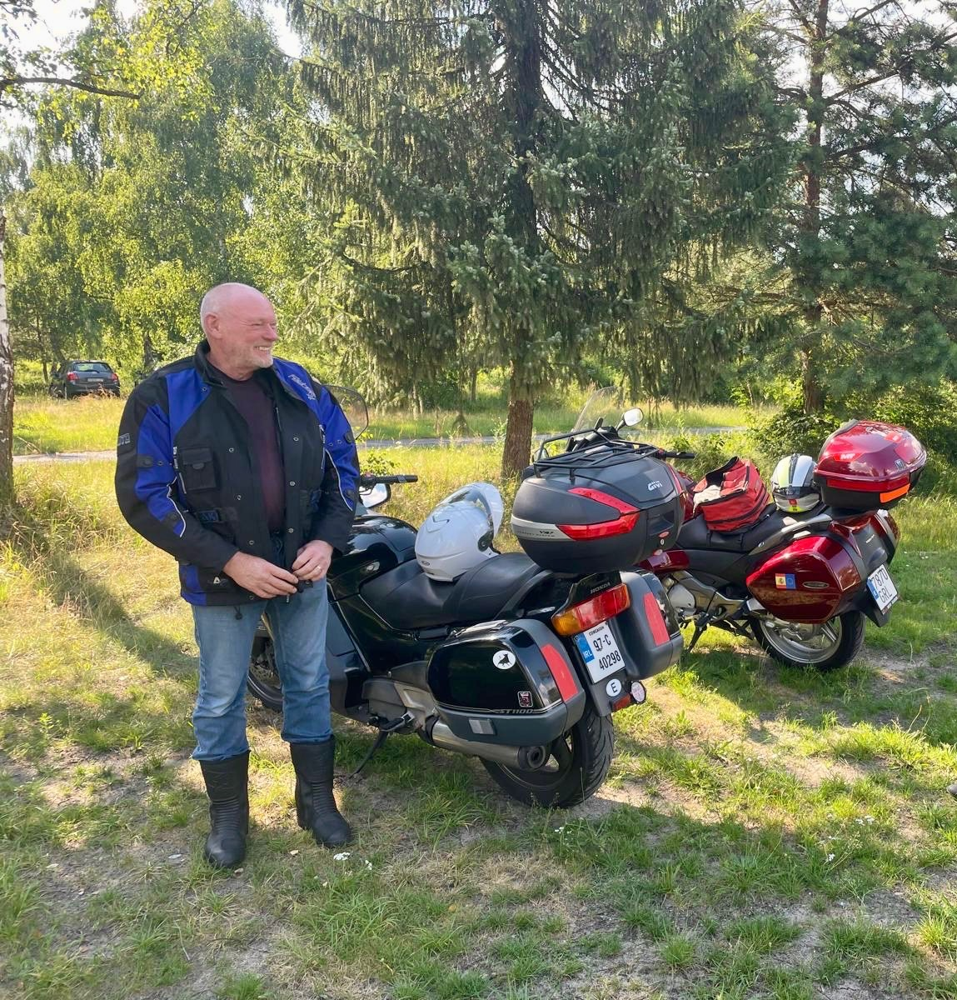

The Ride Never Gets Old

📍 Cork, Ireland
🏍 Motorcycle:
1998 Honda Pan European ST1100
Dave completed an incredible European motorcycle tour covering 5,998 kilometres.
🇮🇪 Cork, Ireland
↓
🇬🇧 England
↓
🇩🇪 MG, Germany
↓
🇩🇰 Denmark
↓
🇮🇪 Back to Ireland
Dave represents exactly what the Retired to Ride Touring Awards stand for.
A passion for motorcycles, a willingness to explore new roads and the determination to keep creating adventures regardless of age.
His journey across Europe demonstrates that motorcycle touring is not only about the destinations reached, but the memories created along the way.
Dave's journey celebrates the true spirit of motorcycle touring: adventure, independence, exploration and the love of the open road.
His 5,998 km European adventure on a 1998 Honda Pan European ST1100 is a reminder that great motorcycles and great adventures stand the test of time.

Do you know a motorcycle tourer aged 60 or over whose journey deserves recognition?
Nominate A Rider